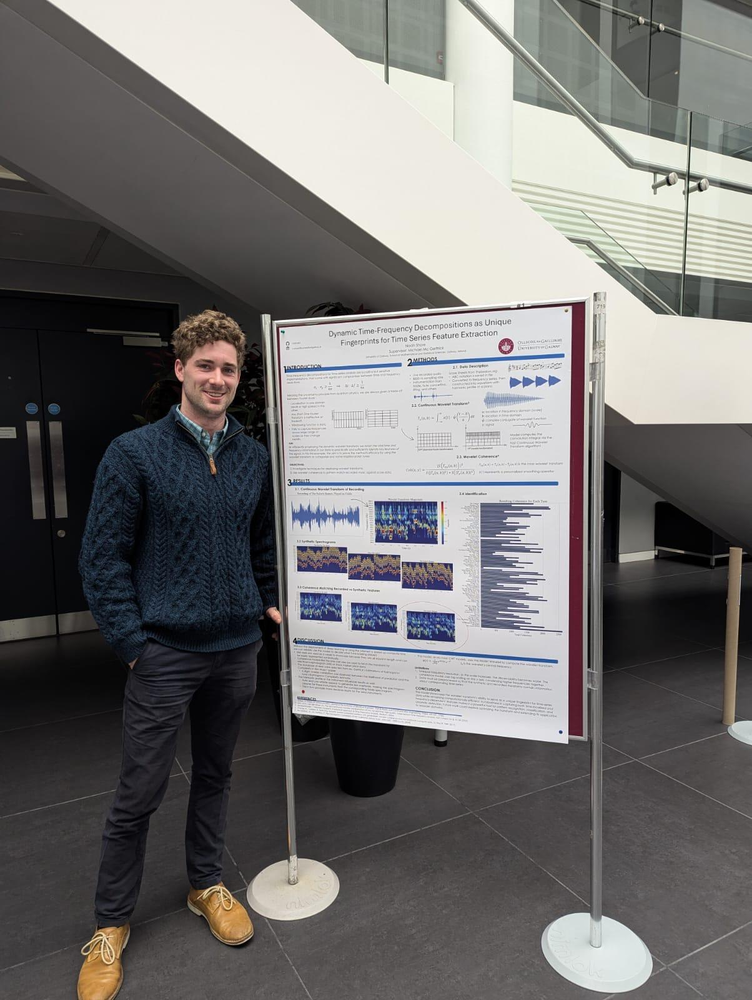

Professional Summary
Mathematician and computational scientist with a focus in quantitative analysis,
full-stack development, and DevOps workflows. Experienced in building end-to-end data-driven
applications, from mathematical modeling visualization to deployment via cloud-native tools.
Research background in time-frequency analysis, signal processing, and nonlinear
dynamic systems, with practical applications in finance, engineering, and music theory.
Education
- M.S. Mathematics University of Galway, 2025
Research: Dynamic Frequency Decomposition, Wavelet Coherence, Time-Series Signatures
Community: Award winning speaker at College of Science and Engineering and School of Mathematical and Statistical Sciences Research and Innovation Days
Special Interest: Optimization, Patterns in Irish Music
- B.S. Mathematics University of North Carolina at Chapel Hill, 2022
Honors Research: Computational Fluid Dynamics – Implemented solvers for Navier-Stokes equations
Relevant Coursework: Machine Learning, Optimization, Numerical Methods, Differential Equations
Work Experience
Computational Modeler NextPower 360, Jan 2023 – Aug 2024
- Modeled electromagnetic properties of wind generators using COMSOL AC/DC modules.
- Conducted Finite Element Analysis to numerically solve Maxwell's Equations and optimize generator designs.
- Assisted in prototype development and R&D innovation.
Machine Learning Instructor ID Tech Academy, May 2022 – Nov 2022
- Designed and led custom ML & Python courses for students (ages 14–20).
- Taught Neural Networks, Regression Models, Data Wrangling using PyTorch, Pandas, and Scikit-Learn.
- Created personalized lesson plans for hands-on learning.
Technical Skills
- Programming: Python/PyTorch, Julia, R, MATLAB, Mathematica, SQL, HTML/CSS
- Machine Learning: Neural Networks, Optimization, Novel Feature Extraction, Lempel-Ziv Compression
- Computational Modeling: FEA, Navier-Stokes Solvers, Time-Frequency Analysis, Maxwell's Equations
- DevOps & Deployment: Docker, GitHub Actions, Azure Container Registry, Azure Web Apps
- Software Tools: Git, ANSYS Maxwell, AWS Cloud, COMSOL
Projects
Master’s Thesis GitHub Link
- Developing time-frequency decomposition methods for analyzing raw recordings of Irish tunes and exploring feature extraction techniques to identify tunes without traditional deep learning models.
- Expanded use cases for model to generalized time-series signatures by wavelet transform for applications in economic forecasting and electroencephalography cross spectra output.
Coherix Live Market Analysis Live App
- Building a dashboard for signal spectral decomposition using wavelet coherence across incoming data.
- Designed a novel backend to perform expensive computations that allow for streaming results in real-time.
- Outperforms existing coherence implementations by many orders of scale.
- Containerized application with Docker and deployed to Azure using container registry and web app portal.
Deep Learning for Image Recognition GitHub Link
- Trained multiple image classification models on the MNIST dataset.
- Implemented Multilayer Perceptron, Random Forest, Logistic Regression, and SVM.
- Used to formulate lesson plans for machine learning students.
Activities
- NCAA Track & Field – Competed for UNC in ACC Championships
- Competitive Sailing – Crewman for UNC & University of Galway Sailing Teams
- Musician – Fiddler with TRADSOC (University of Galway) and Carolina Bluegrass Band (UNC Chapel Hill)
- Maths and Music Research Group - University of Galway Comp-Sci and Math Departments
Biography

I grew up in the Blue Ridge Mountains of Asheville, North Carolina, where I was a
triple state champion and state MVP in high school track and field. I began my undergraduate studies at UNC Chapel Hill, where I ran track and studied
biology and chemistry before taking time away from university to serve with AmeriCorps
in San Jose, California. There, I worked for a year and a half at a public school,
an experience that deepened my interest in education and allowed me
to connect with students from diverse backgrounds.
I returned to UNC to pursue mathematics, working on computational fluid dynamics
through undergraduate research. I also performed on the fiddle with the Carolina Bluegrass
Band and sailed with the university’s intercollegiate sailing team.
During my studies, I also taught machine learning and Python to high school students,
allowing me to design custom courses and create lesson plans.
This experience developed my personal philosophy of education, which emphasizes
explainability and epistemological priors.
After graduating, I worked as a computational modeler at a wind energy startup, where I
modeled electromagnetic properties of wind generators using COMSOL Multiphysics and conducted
Finite Element Analysis to showcase designs.
My curiosity and love of exploration have taken me to over 40 countries across Europe,
Southeast Asia, Africa, and Latin America. Most recently, I completed a research master’s degree at the University of Galway in Ireland,
where I won awards for my research presentations, and I am currently awaiting publication for my work.
I am enthusiastic about leveraging mathematics, scientific computation, and machine learning
to automate complex processes. My current focus is on developing innovative solutions through
my Coherix projects, where I aim to bridge advanced research with practical applications
in quantitative analysis and econometrics.